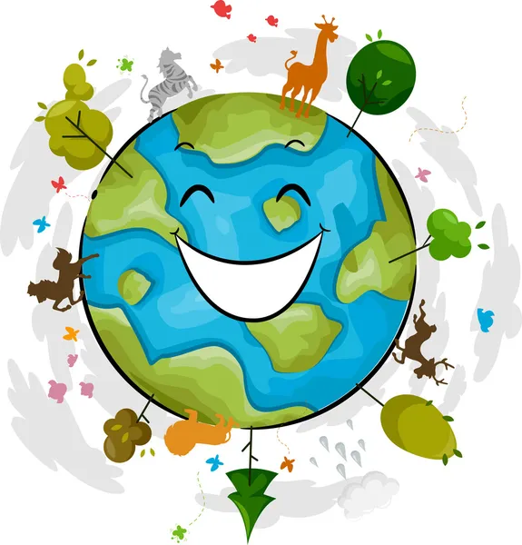

El cambio climático se refiere a la variación a largo plazo de las condiciones climáticas globales o regionales en la Tierra. Estas alteraciones incluyen cambios en la temperatura promedio, patrones de precipitación, nivel del mar y eventos climáticos extremos. Aunque el clima del planeta siempre ha cambiado, en las últimas décadas se ha acelerado principalmente debido a actividades humanas, como la quema de combustibles fósiles y la deforestación.
El cambio climático ha provocado un aumento de la temperatura global, lo que ha generado cambios significativos en los patrones climáticos. Esto incluye un incremento en la frecuencia e intensidad de fenómenos climáticos extremos, como huracanes, sequías e inundaciones, que afectan de manera directa a las comunidades y a los ecosistemas.
La pérdida de biodiversidad y la extinción de especies se han intensificado debido a la alteración de hábitats, como la deforestación y el deshielo de regiones árticas. Además, la acidificación de los océanos, provocada por la absorción de CO₂, afecta a los ecosistemas marinos y a las especies que dependen de ellos, poniendo en peligro cadenas alimenticias enteras. Los ciclos de vida de plantas y animales también se ven alterados, generando desequilibrios ecológicos.
Pequeñas acciones diarias pueden marcar una gran diferencia en la lucha contra el cambio climático. Por ejemplo, reducir el consumo de energía en casa al apagar luces y electrodomésticos que no estés usando puede disminuir tu huella de carbono. Optar por el transporte público, la bicicleta o caminar no solo reduce emisiones, sino que también mejora tu salud. Además, plantar árboles es una forma sencilla y efectiva de capturar CO₂, contribuyendo a mejorar la calidad del aire y a combatir el calentamiento global. Pequeñas decisiones individuales tienen un impacto positivo en el planeta.
